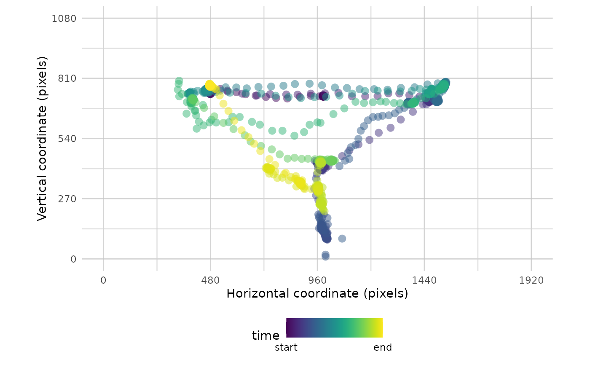
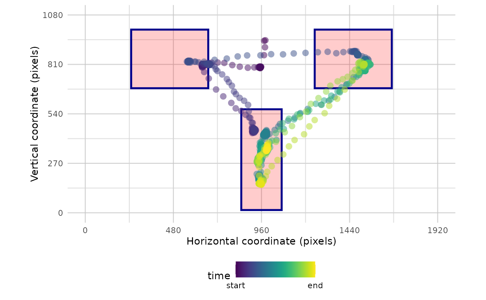
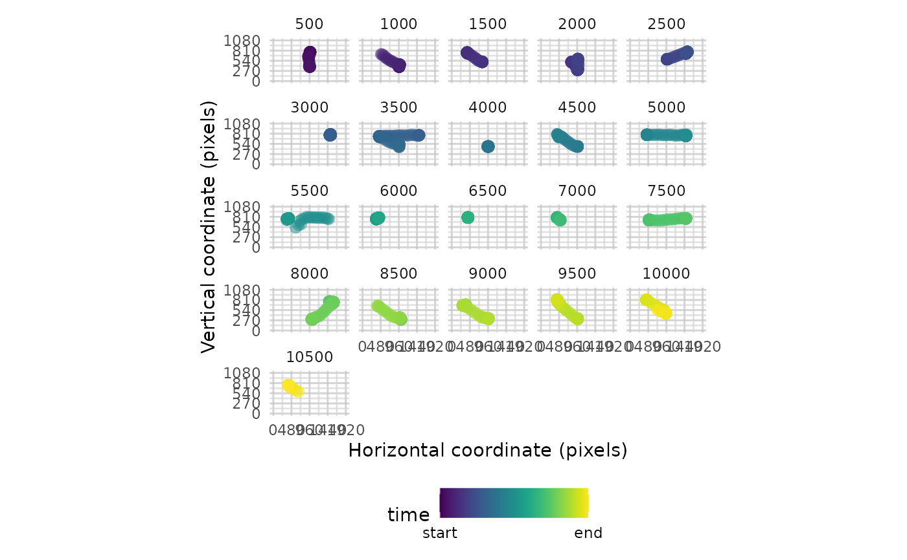

A tool for visualising the timecourse of raw data over a single trial. Participant and trial values can be selected from the data. If values for these parameters are not provided then a single participant and a single trial will be sampled at random. Data can be split into bins by time or by the number of bins.
Usage
plot_seq(
data = NULL,
AOIs = NULL,
trial_values = NULL,
pID_values = NULL,
bg_image = NULL,
res = c(0, 1920, 0, 1080),
flip_y = FALSE,
plot_header = FALSE,
bin_time = NULL,
bin_range = NULL
)Arguments
- data
A dataframe with raw data. If multiple trials are used, then one trial is sampled at random.
- AOIs
A dataframe of areas of interest (AOIs), with one row per AOI (x, y, width_radius, height).
- trial_values
specify particular values within 'trial' to plot data from certain trials
- pID_values
specify particular values within 'pID' to plot data from certain participants
- bg_image
The filepath of a PNG image to be added to the plot, for example to show a screenshot of the task.
- res
resolution of the display to be shown, as a vector (xmin, xmax, ymin, ymax)
- flip_y
reverse the y axis coordinates (useful if origin is top of the screen)
- plot_header
display the header title text which explains graphical features of the plot.
- bin_time
if wanting to split data into bins, the time (in ms) for each bin of data to be displayed
- bin_range
if wanting to split data into bins, the first and last bin to be display, e.g., c(1,5)
Examples
data <- combine_eyes(HCL)
# plot the raw data
plot_seq(data)
#> Multiple pIDs detected: randomly sampled - pID:119
#> Multiple trials detected: randomly sampled - trial:3

# with AOIs
plot_seq(data, AOIs = HCL_AOIs)
#> Multiple pIDs detected: randomly sampled - pID:118
#> Multiple trials detected: randomly sampled - trial:5

# plot raw data with bins
plot_seq(data, bin_time = 500)
#> Multiple pIDs detected: randomly sampled - pID:119
#> Multiple trials detected: randomly sampled - trial:1
